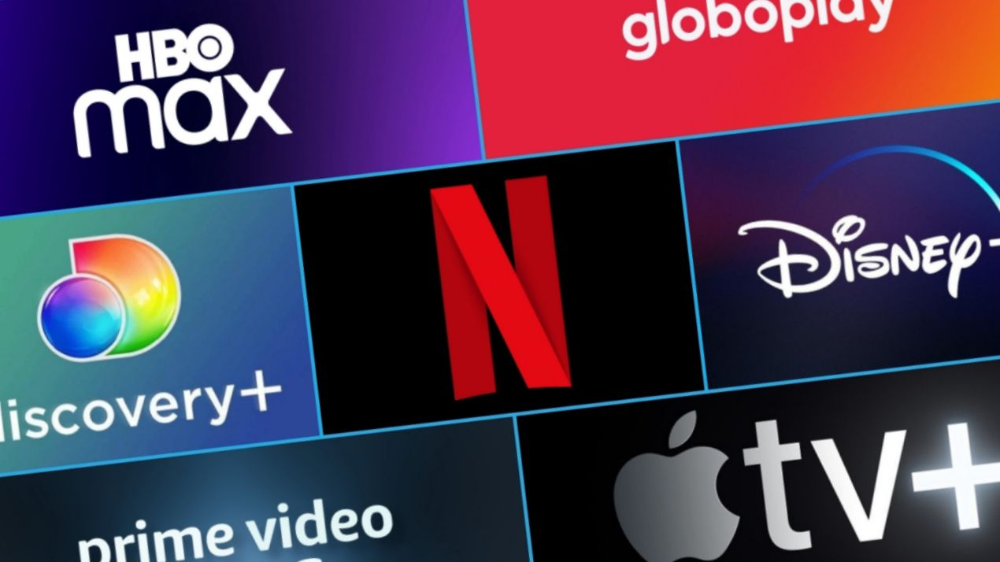

Streaming
Stay on top of the entire streaming world.

Streaming overtakes cable TV for the first time in the US
In July, the use of streaming surpassed that of cable TV for the
first time in the United States. Nielsen report, research firm,
indicates that 34.8% of television consumption in the country was
due to streaming, followed by cable TV (34.4%) and broadcast, the
American equivalent to open TV (21.6%).
Samsung TV Plus changes brands and release more free content
Samsung TV Plus, the South Korean manufacturer's free ad-supported
platform (FAST), announced Tuesday that it was undergoing a rebrand
to mark the release of more free content. According to a blog post,
in the last 12 months alone, the video service has seen 100% growth,
resulting in three billion hours of content watched globally.
Available on any Samsung smart TV released in 2015 or later, as well
as Galaxy tablets and smartphones, Samsung TV Plus offers 100% free
access to news, sports, kids' content, entertainment and more. To
use, just turn on the smart TV, no need to download programs,
additional gadgets or credit card.
Netflix begins testing the creation of 'gamertags' on the platform
Netflix has shown that its investment in games may not be huge, but
it is constant. Some users of the platform - in the countries where
the games are available - now report a new feature that allows them
to create a specific name for their gaming profile, something like a
"gamertag". Your real name as a Netflix subscriber and profile
picture are not shown to other subscribers and players. Thus, you
have the opportunity to create a specific name to be shown in
public, in order to make it easier for people to identify and help
invite to play along and other such resources.
Netflix: See how much the cheapest plan with ads should cost
According to exclusive information given to Bloomberg, Netflix's new
subscription plan with ads already has a price estimate. The value
has not yet been made official by the company, but it gives an
estimate of how much the novelty should cost. Bloomberg's sources
say Netflix's cheapest, ad-supported plan will cost between $7 and
$9, down from the current cheapest plan, which costs $9.99. That is,
proportionally speaking, the plan could cost values from R$ 18 in
our country, following the line of leakage.
Globoplay launches on Amazon Fire TV Stick in Brazil
This Thursday (25), Grupo Globo announced that the Globoplay
platform is available to subscribers using Amazon's Fire TV
streaming devices. From now on, consumers of all models sold in
Brazil will be able to access the Globoplay service. In a statement,
Globoplay states that the partnership aims to expand Brazilian
consumers' access to the company's content, offering the same option
to users on different platforms.
TVCoins debuts in Brazil with free streaming for creators
The TVCoins platform confirmed on Tuesday (9) its arrival in Brazil,
bringing a new space option for creators to promote their content
using a customizable streaming app with no initial investment. The
service, also available for TV channels, can be accessed on smart
TVs, cell phones and tablets. Based on the Advertising-Based Video
on Demand (AVOD) business model, the American company offers
creators and broadcasters a free, cloud-based streaming platform. In
it, it is possible to publish content and take advantage of the
entire infrastructure, already ready, to publicize the work and
increase the audience. As there is no charge to use the service, the
project is supported by sharing ad revenue. Another differential is
the development of the platform, which takes place through a no-code
administrative portal, allowing for a faster personalized app.
Disney+ passes 152 million subscribers worldwide
The Walt Disney Company revealed that Disney+ performed better than
expected during the third fiscal quarter. The movie and series
streaming service rose to 152.1 million total subscribers. In the
third quarter alone, Disney+ gained 14.4 million new users - the
company's initial expectation was "only" 10 million. Counting on the
company's other streaming services, such as Hulu and ESPN+, Disney
now surpasses Netflix in total subscribers. Hulu had 46.2 million
subscribers and ESPN+ had 22.8 million at the end of the period.
These numbers bring Disney's Direct-To-Consumer Business (DTC) to
221.1 million total. Most of Disney+'s growth has come from outside
the US and Canada. In these two markets, 100,000 subscribers were
added, while "international users" added 6 million new plans.
Disney+ Hotstar, available in India and Southeast Asia, added 8.3
million people to that account.